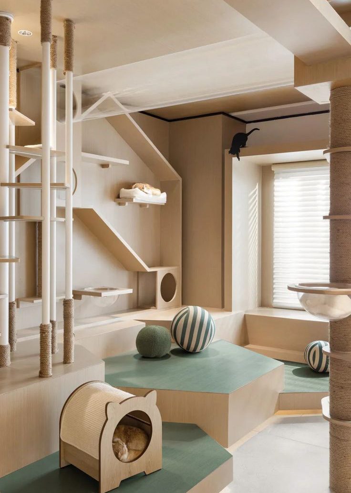

Det ultimata paradiset för din katt när du är bortrest, upptagen eller behöver en trygg plats för din fyrbenta
vän. Hos oss får din katt inte bara ett tryggt boende, utan en helhetsupplevelse fylld av komfort, stimulans och
omtanke.
Låt Katt Palace bli din katts andra hem, där lyx och kärlek går hand i hand!
R
Standard
Vi erbjuder ett bekvämt och tryggt boende för katter där alla grundläggande behov är tillgodosedda. Varje
katt får ett privat utrymme med en skön liggplats, daglig utfodring och tillgång till färskt vatten samt
daglig rengöring av kattlådan. Det finns olika leksaker och katten får socialisera med personalen.
Standard - rum för 1 - 2 katter 200 kr / dygn
Superior
Detta rum passar för katter som vill ha extra komfort och uppmärksamhet. Här får katten ett större och mer
privat utrymme med mjukare sängar, fler leksaker och klösmöbler. Katten får mer personlig interaktion med
personalen som till exempel längre lektid eller mysstunder. Dessutom kan ägarna välja bland olika
foderalternativ.
Superior - rum för 1-4 katter 400 kr / dygn

Deluxe
Deluxe är ett lyxigt alternativ med större sviter som inkluderar flera nivåer eller klättra utrymme. Rummet
är utrustat med möbler som speglar kattens naturliga behov som klösträd och utkiksplatser. Med detta rum har
också katten tillgång till fönster eller utomhus utrymme för att kunna njuta av miljön utanför.
Deluxe - rum för 1-4 katter 500 kr / dygn
Galleri

Villkor & policys
Boknings och avbokningspolicy
För att boka en vistelse för din katt hos oss erbjuder vi flera enkla alternativ samt tydliga regler för
avbokning:
Bokning
Bokning av vistelse kan göras via e-post, telefon, eller direkt genom vår hemsida. Vänligen ange all
nödvändig
information om din katt vid bokning, inklusive vaccinationsstatus och ID-nummer för mikrochip.
Vid bokning tas en deposition på 500 kr som säkrar din plats och kattens vistelse. Depositionen kommer att
återbetalas vid incheckning.
Avbokning
Avbokning måste ske minst 24 timmar innan den avtalade vistelsen påbörjas för att undvika extra kostnader.
Vid sen avbokning, det vill säga mindre än 24 timmar före bokningens start, eller om du inte dyker upp på
bokad
tid, återbetalas inte depositionen.
Villkor och krav för kattens vistelse
För att säkerställa en trygg och säker miljö för alla katter som vistas på vårt kattpensionat, har vi
följande
krav och regler som måste efterföljas:
Vaccination och ID-märkning
Alla katter som vistas hos oss måste vara fullständigt vaccinerade enligt gällande vaccinationskrav. Vid
incheckning ska giltiga vaccinationsintyg uppvisas.Samtliga katter måste vara ID-märkta med ett mikrochip,
vilket ska kunna verifieras vid bokning och inlämning.
Hälsa och hygien
Katter som lämnas hos oss måste vara vid god hälsa. Vi tar inte emot katter med smittsamma sjukdomar, sår,
eller annan ohälsa som kan riskera andra katters välbefinnande.
Om det skulle uppdagas i efterhand att en katt lämnats in med en smittsam sjukdom eller ohälsa, förbehåller vi
oss rätten att utfärda böter och eventuellt vidta rättsliga åtgärder.
Ombesörjning av katt
Kattägaren är ansvarig för att hämta sin katt vid avtalad tid. Om ägaren medvetet underlåter att hämta sin
katt, kommer ärendet att polisanmälas och en avgift motsvarande dubbla kostnaden för den överenskomna
vistelsen
kommer att debiteras.
Veterinärvård och sjukdom under vistelsen
Om en katt skulle insjukna under sin vistelse hos oss, förbinder vi oss att omedelbart kontakta veterinär för
bedömning och vård. Eventuella veterinärkostnader kommer att faktureras kattägaren. Kattägaren kommer att
informeras så snart det är möjligt om kattens hälsotillstånd, och om nödvändigt kommer
katten att transporteras tillbaka till ägaren.
Allvarlig sjukdom och dödsfall
Det tragiska fall att en katt drabbas av en allvarlig sjukdom under sin
vistelse som leder till dödsfall,
frånsäger vi oss allt ansvar för detta, förutsatt att vi har agerat med omedelbar och adekvat vård och enligt
de
riktlinjer som gäller för kattens välbefinnande.
Om Katt Palace
Vi på Katt Palace började vår resa från grunden, driven av en genuin kärlek till katter. Det hela började
enkelt! Som passionerade kattälskare och ägare insåg vi hur viktigt det är att ge varje katt den omsorg och
uppmärksamhet de förtjänar. Det var denna kärlek och omtanke som ledde oss till att börja vakta andras katter,
utan att vi någonsin kunde föreställa oss hur långt denna resa skulle ta oss. Med tiden växte vår verksamhet,
och idag har vi etablerat oss i tre städer runt om i Sverige. Vi är både stolta och tacksamma över hur långt
vi
har kommit, men vår vision stannar inte där. Vi har siktet inställt på fortsatt expansion, och vi ser fram
emot
att kunna erbjuda vår förstklassiga service till ännu fler kattägare och deras älskade katter. Vår resa må ha
börjat med ren kärlek för djuren, men idag står vi som ett pålitligt och växande företag, där varje steg
framåt
är ett steg närmare att förverkliga drömmen om ett rikstäckande katthotellnätverk.